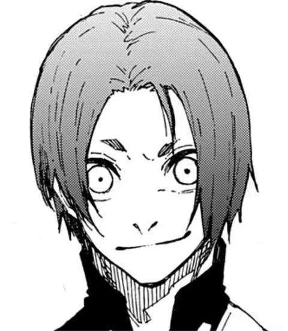

Devorar
Times que se desmancham a cada jogo: quem vence escolhe quem leva do derrotado.
Para entrar na 2ª Seleção, cada um precisa marcar sozinho contra robôs defensores.


Depois vêm duplas, trios, quartetos e quintetos. Quem vence rouba um jogador do time derrotado.

Rin Itoshi, o primeiro do ranking, trata os outros como peças.
Rin“Vocês só estão me atrasando.”
Isagi · pensaNão basta copiar. Eu tenho que devorar o que eles têm.


Numa escolha que deixa Reo sem chão, Nagi decide seguir Isagi.
Reo“Nagi…?”

Até o rei Barou percebe que, se não mudar, fica para trás.
Isagi, Bachira e Rin estão entre os que formam o primeiro quinteto a passar.
Cada derrota vira ingrediente. O ego de Isagi cresce a cada jogo.